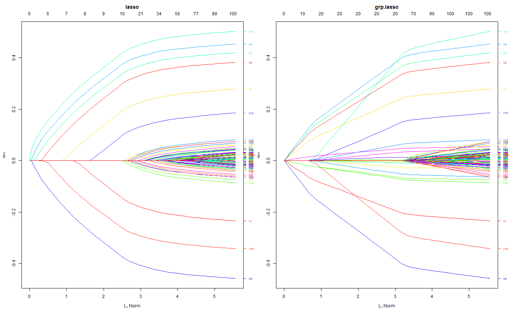
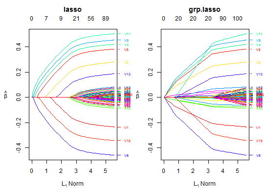
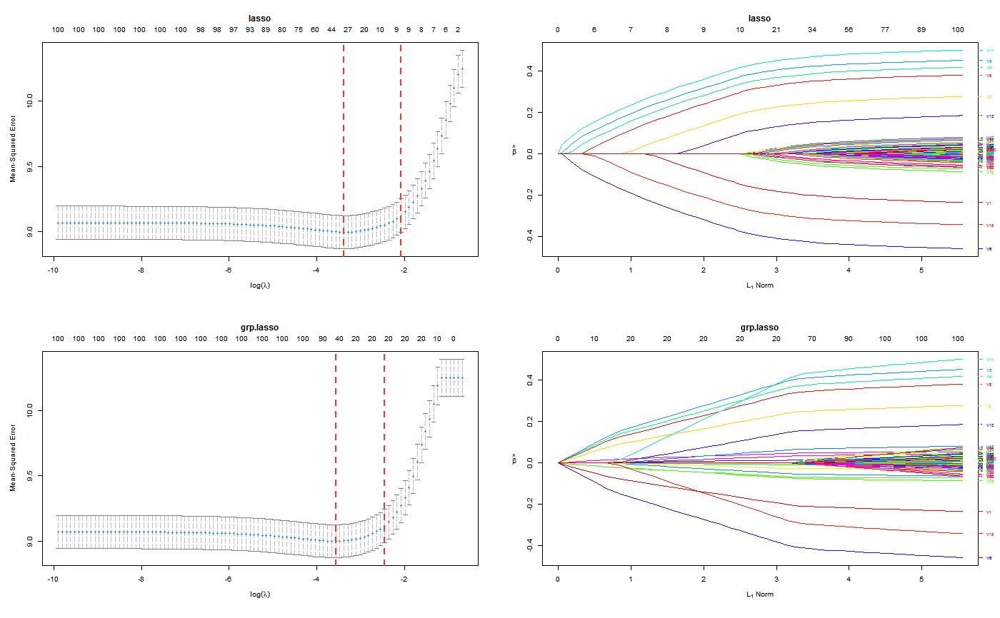

Plot method for Orthogonalizing EM fitted objects
Plot method for Orthogonalizing EM fitted objects
# S3 method for oem plot(x, which.model = 1, xvar = c("norm", "lambda", "loglambda", "dev"), labsize = 0.6, xlab = iname, ylab = NULL, main = x$penalty[which.model], ...) # S3 method for cv.oem plot(x, which.model = 1, sign.lambda = 1, ...) # S3 method for xval.oem plot(x, which.model = 1, type = c("cv", "coefficients"), xvar = c("norm", "lambda", "loglambda", "dev"), labsize = 0.6, xlab = iname, ylab = NULL, main = x$penalty[which.model], sign.lambda = 1, ...)
| x | fitted "oem" model object |
|---|---|
| which.model | If multiple penalties are fit and returned in the same oem object, the which.model argument is used to
specify which model to plot. For example, if the oem object |
| xvar | What is on the X-axis. |
| labsize | size of labels for variable names. If labsize = 0, then no variable names will be plotted |
| xlab | label for x-axis |
| ylab | label for y-axis |
| main | main title for plot |
| ... | other graphical parameters for the plot |
| sign.lambda | Either plot against log(lambda) (default) or its negative if |
| type | one of |
set.seed(123) n.obs <- 1e4 n.vars <- 100 n.obs.test <- 1e3 true.beta <- c(runif(15, -0.5, 0.5), rep(0, n.vars - 15)) x <- matrix(rnorm(n.obs * n.vars), n.obs, n.vars) y <- rnorm(n.obs, sd = 3) + x %*% true.beta fit <- oem(x = x, y = y, penalty = c("lasso", "grp.lasso"), groups = rep(1:10, each = 10)) layout(matrix(1:2, ncol = 2)) plot(fit, which.model = 1) plot(fit, which.model = 2)set.seed(123) n.obs <- 1e4 n.vars <- 100 n.obs.test <- 1e3 true.beta <- c(runif(15, -0.5, 0.5), rep(0, n.vars - 15)) x <- matrix(rnorm(n.obs * n.vars), n.obs, n.vars) y <- rnorm(n.obs, sd = 3) + x %*% true.beta fit <- cv.oem(x = x, y = y, penalty = c("lasso", "grp.lasso"), groups = rep(1:10, each = 10)) layout(matrix(1:2, ncol = 2)) plot(fit, which.model = 1) plot(fit, which.model = "grp.lasso")set.seed(123) n.obs <- 1e4 n.vars <- 100 n.obs.test <- 1e3 true.beta <- c(runif(15, -0.5, 0.5), rep(0, n.vars - 15)) x <- matrix(rnorm(n.obs * n.vars), n.obs, n.vars) y <- rnorm(n.obs, sd = 3) + x %*% true.beta fit <- xval.oem(x = x, y = y, penalty = c("lasso", "grp.lasso"), groups = rep(1:10, each = 10)) layout(matrix(1:4, ncol = 2)) plot(fit, which.model = 1) plot(fit, which.model = 2) plot(fit, which.model = 1, type = "coef") plot(fit, which.model = 2, type = "coef")